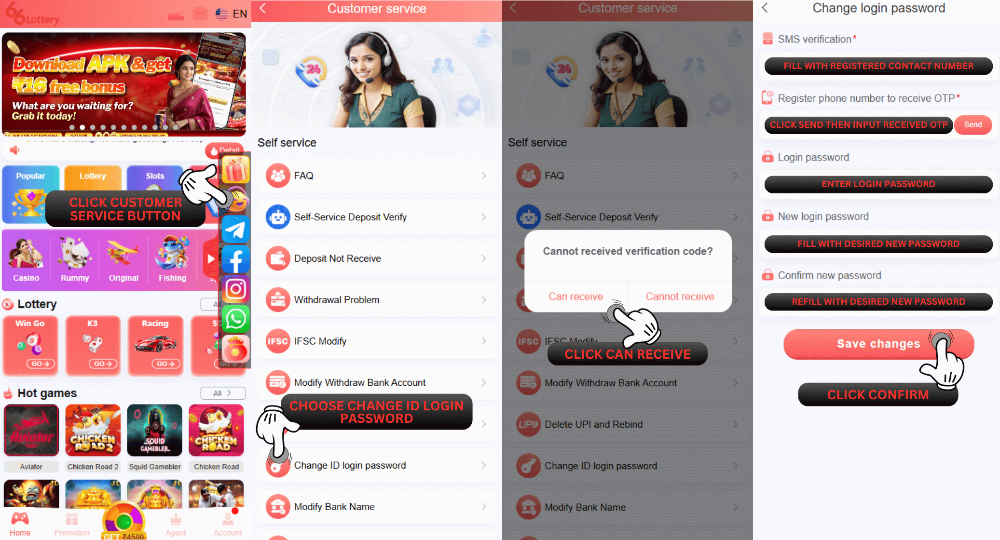

आईडी लॉगिन पासवर्ड बदलें
प्रश्न: मैं स्वयं-सेवा केंद्र 66 Lottery पर आईडी लॉगिन पासवर्ड बदलने के बारे में समस्या कैसे प्रस्तुत कर सकता हूं?
उत्तर: स्वयं सेवा केंद्र 66 Lottery पर चेंज आईडी लॉगिन पासवर्ड सबमिट करने के लिए कृपया इस चरण का पालन करें
1. आपको इस लिंक का उपयोग करना होगा https://www.66lottery.vip/
2. लिंक डालने के बाद नोटिफिकेशन को बंद कर दें
3. समस्या का चयन करें और आईडी लॉगिन पासवर्ड बदलें चुनें
4. अपना 66 Lottery ID अकाउंट भरें
5. रजिस्टर फ़ोन नंबर भरें
6. फोटो सेल्फी होल्डिंग पासबुक बैंक संलग्न करें
7. पहचान पत्र धारण करते हुए फोटो सेल्फी संलग्न करें
8. नया पासवर्ड भरें (बड़े-छोटे अक्षर और संख्या के साथ न्यूनतम 8 अक्षर)
9. सबमिट इश्यू बटन दबाएं

स्थिति संबंधी समस्या
प्रश्न: मैं स्वयं-सेवा केंद्र 66 Lottery पर अपनी स्थिति परिवर्तन आईडी लॉगिन पासवर्ड की समस्या की जांच कैसे करूं?
उ: आप चेक इश्यू स्टेटस दबाकर स्टेटस इश्यू की जांच कर सकते हैं, फिर अपना ओके.विन आईडी अकाउंट भरें और चेंज आईडी लॉगिन पासवर्ड चुनें, अंत में खोजने के लिए क्लिक करें और यह आपके इश्यू की स्थिति दिखाएगा।
सफलता की स्थिति
प्रश्न: मैं पहले से ही जांच कर रहा हूं और यहां स्थिति पहले से ही सफल है और एक नोट है पास - सफलता "पासवर्ड बदलें सफल! नया पासवर्ड: ***" इसका क्या मतलब है?
उ: इसका मतलब है कि 66 Lottery खाता विभाग पहले से ही आपके खाते पर पासवर्ड को संशोधित करने में सफल रहा है और आप नए पासवर्ड का उपयोग करके फिर से लॉगिन करने का प्रयास कर सकते हैं
स्थिति अस्वीकार करें
प्रश्न: स्थिति अस्वीकार के बारे में मुझे यह जानने की आवश्यकता है कि क्या मेरी परिवर्तन आईडी लॉगिन पासवर्ड समस्या 66 Lottery खाता विभाग द्वारा अस्वीकार कर दी गई है?
उ: ठीक है निश्चिंत रहें हम आपको यह समझाने में मदद करेंगे कि कुछ नोट अस्वीकृति हैं जिन्हें आपको जानना आवश्यक है हम इस पर नीचे स्पष्टीकरण देंगे：
1. "नमस्कार, आपके द्वारा सबमिट की गई जानकारी गलत है" को अस्वीकार करें: इसका मतलब है कि प्रदान की गई आवश्यकता और डेटा गलत है, आपको सभी आवश्यकताओं को सटीक रूप से प्रदान करना होगा जो आवश्यक है